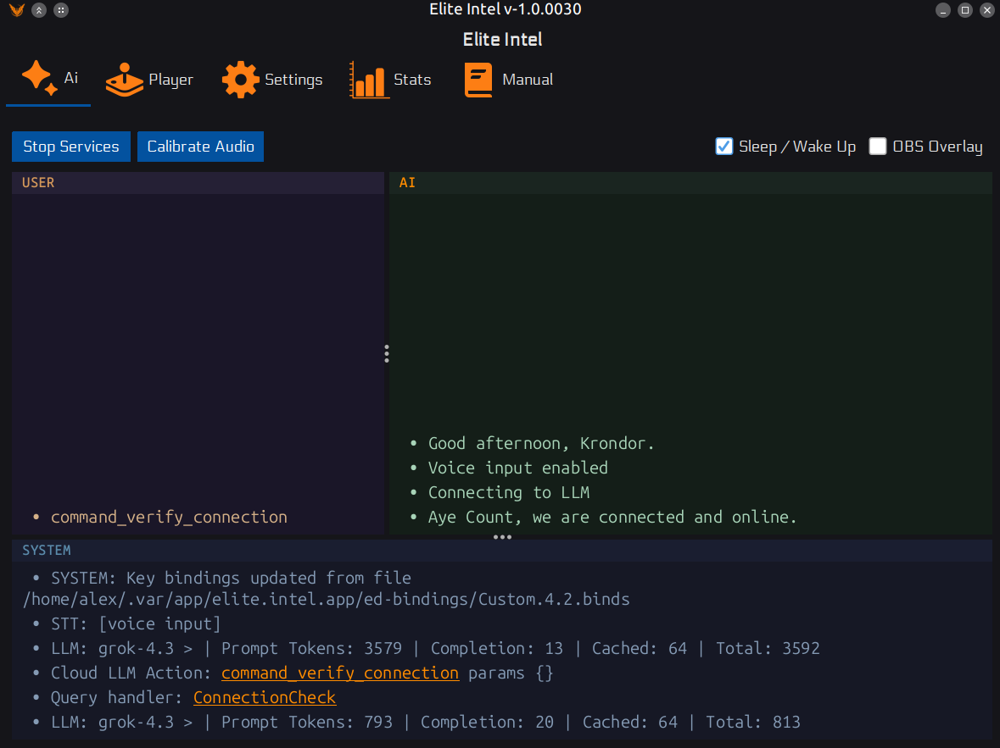
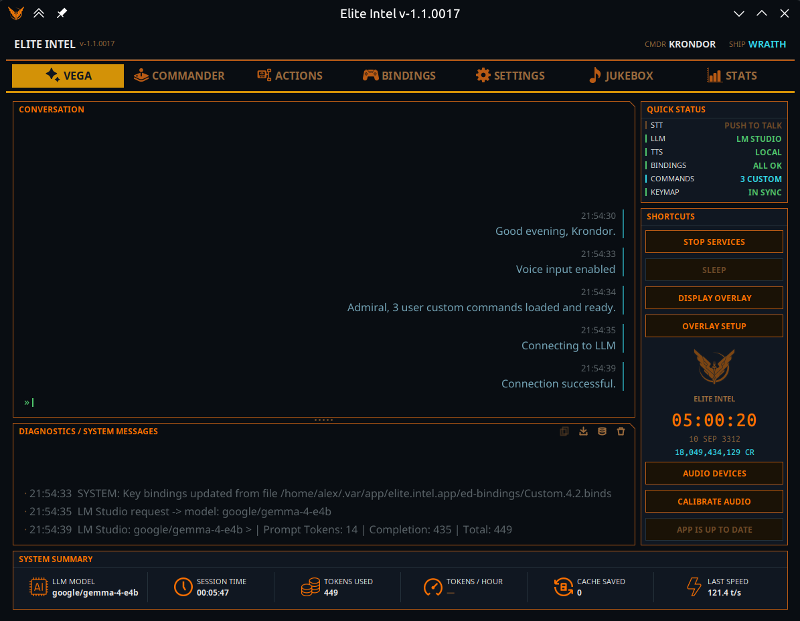

Elite Intel
Голосовий ШІ-помічник для Elite Dangerous
| V1.0 | V1.1 |
|---|---|
 |
 |
Говори природно. Літай краще.
Elite Intel з'єднує ваш голос із кораблем. Жодних списків команд для запам'ятовування, жодного суворого синтаксису. Просто скажіть, що маєте на увазі, і ШІ зробить решту. Чи то керування системами корабля, прокладання маршруту або сканування системи в пошуках сигналів Elite Intel розуміє ваш намір і діє відповідно.
Дані отримуються в реальному часі з Spansh та EDSM.
Підтримувані мови: Англійська, Іспанська, Французька, Українська, Німецька, Російська
Інтелект, а не просто автоматизація
Elite Intel не просто натискає клавіші за вас. Мовна модель застосовує предметні знання, щоб надавати вам змістовний аналіз. Запитайте про поточне спорядження і отримаєте розбір переваг, слабких місць та компромісів, а не просте перерахування характеристик.
Дані сесії з автоматичних сканувань і результатів FSS безпосередньо надходять у запити на кшталт «Що на сканерах?» або «Проаналізуй місцеві сигнали.» ШІ працює з тим, що надає гра. Там, де дані недоступні бо вони є лише на панелі, а не в журналі, він так і скаже.
Ваш корабель. Ваше залізо. Ваші правила.
Elite Intel працює повністю на вашому комп'ютері. Весь конвеєр розпізнавання мовлення, мовна модель і синтез голосу функціонує офлайн. Жодних хмарних акаунтів, жодних підписок, жодних даних, що залишають вашу систему.
Надаєте перевагу гібридному налаштуванню? Комбінуйте вільно: локальне розпізнавання мовлення з хмарною мовною моделлю або хмарний синтез голосу з локальним виведенням. Вибір за вами.
Розпізнавання мовлення, яке справді працює
Elite Intel використовує модель транскодера NVIDIA Parakeet для перетворення мовлення в текст технологію того ж класу, що застосовується в професійних інструментах транскрипції. Вона працює як на Windows, так і на Linux без додаткового налаштування чи навчання.
Якщо ви раніше використовували програмне забезпечення для розпізнавання голосу з Elite Dangerous очікуйте помітної різниці в точності.
Голос, що підходить для кабіни пілота
Kokoro TTS вбудований і працює одразу після встановлення. Жодних завантажень, жодних API-ключів, жодного налаштування. Він надає 53 голоси англійською, іспанською та французькою і підтримує повну систему особистостей.
Для всіх інших підтримуваних мов Google TTS забезпечує природно звучаче мовлення кожною мовою, яку підтримує Elite Intel. Для цього потрібен API-ключ, який можна налаштувати в Налаштуваннях / Хмарні сервіси.
Оберіть свою мовну модель
Elite Intel працює з мовною моделлю, що підходить для вашого налаштування:
Безкоштовно й офлайн LM Studio або Ollama із локальною моделлю
Безкоштовна хмара Mistral
Платна хмара Anthropic, OpenAI, xAI, Gemini, DeepSeek
Змінюйте постачальника в будь-який час у налаштуваннях. Перевстановлення не потрібне.
Спільнота
Elite Intel є відкритим програмним забезпеченням. Звіти про помилки, запити на функції та pull-запити вітаються.
Приєднуйтесь до спільноти на Matrix: 👉 #krondor:matrix.org 👈
Завжди зберігайте ручний контроль над критичними системами корабля.